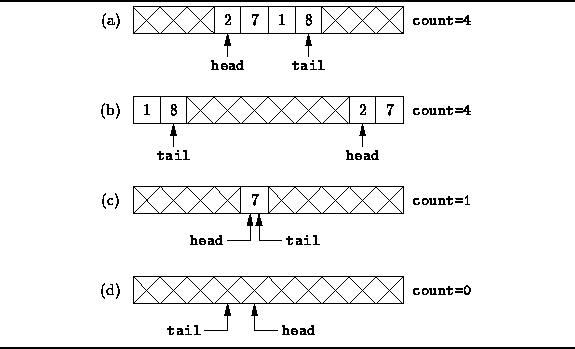
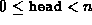
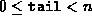
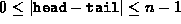

Data Structures and Algorithms
with Object-Oriented Design Patterns in Java
Data Structures and Algorithms
with Object-Oriented Design Patterns in Java
QueueAsArray objects comprise three fields--array, head, and tail.
The first, array, is an array of Objectss
that is used to hold the contents of the queue.
The objects contained in the queue
will be held in a contiguous range of array elements
as shown in Figure  (a).
The fields head and tail
denote the left and right ends, respectively, of this range.
(a).
The fields head and tail
denote the left and right ends, respectively, of this range.

Figure: Array implementation of a queue.
In general, the region of contiguous elements will not necessarily
occupy the leftmost array positions.
As elements are deleted at the head,
the position of the left end will change.
Similarly, as elements are added at the tail,
the position of the right end will change.
In some circumstances, the contiguous region of elements
will wrap around the ends of the array as shown in Figure (b).
As shown in Figure ,
the leftmost element is array[head],
and the rightmost element is array[tail].
When the queue contains only one element,
as shown in Figure (c).
Finally, Figure (b) shows that if the queue is empty,
the head position will actually be to the right
of the tail position.
However, this is also the situation which arises when the queue
is completely full!
The problem is essentially this:
Given an array of length n,
then  and .
Therefore, the difference between the head and tail
satisfies .
Since there are only n distinct differences,
there can be only n distinct queue lengths, 0, 1, ..., n-1.
It is not possible to distinguish the queue which is empty
from the queue which has n elements
solely on the basis of the head and tail fields.
There are two options for dealing with this problem: The first is to limit the number of elements in the queue to be at most n-1. The other is to use another field, count, to keep track explicitly of the actual number of elements in the queue rather than to infer the number from the head and tail variables. The latter approach has been adopted in the implementation given below.
 Copyright © 1998 by Bruno R. Preiss, P.Eng. All rights reserved.
Copyright © 1998 by Bruno R. Preiss, P.Eng. All rights reserved.